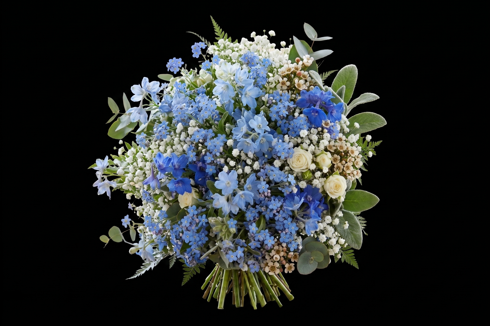

a little surprise for you
Happy Birthday,
my baby.
click the envelope to open
a few little things
These are
for you.
Open each little part of my heart, made especially for you.
a message for you
My favorite
person.
Happy birthday, baby. I love you more than I can explain. Thank you for every laugh, every hug, and every ordinary day you make feel beautiful.
You are my safe place and my best decision. I will keep choosing you, today and every day after this.
always yours,
your asawa ♡
our little story
From then
to now.
It started when you greeted me with a simple happy birthday. Now it is my turn to greet you, after all your sweet pangungulit somehow brought you into my life.
little things I never want to forget
The small moments
I keep close.


reasons I choose you
I choose you,
every time.
little things for feeling days
Open when
you need me.
this song reminds me of you
Those Eyes
New West
tap the button to play
for my favorite person

my flowers, picked just for you ♡Flowers
for you.
I know scorpion grass is one of your favorites. My attempt to grow it may not have been successful, but I learned that forget-me-nots have a deep meaning for you. I only discovered that now, and I think you are the scorpion grass in my life: unexpected, meaningful, and someone I will always cherish.
These flowers may be virtual, but the love behind them is real. You make my life softer, brighter, and more beautiful.